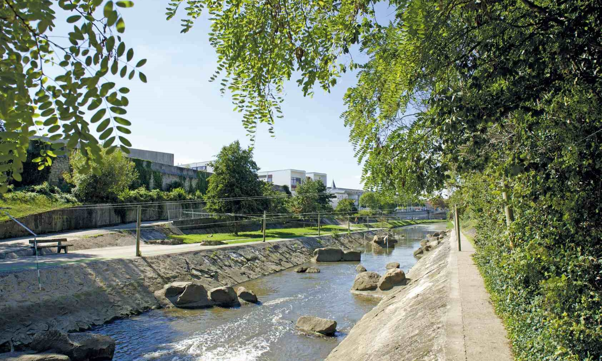

Survolez l'image et agrandissez/réduisez la vue à l'aide de la molette.
Budget: 2 694 000 € HT (2 279 000 € mail des canaux, 244 000 € bd de la Mothe, 171 000 € salons urbains)
Surface: 37 400 m2 (30 500 m2 mail des canaux, 5 700 m2 bd de la Mothe, 1 200 m2 salons urbains)
Date début: 1989
Date fin: 1989
Maîtrise d'ouvrage: SOLOREM (SEM)
Co-traitant(s): bureau des paysages
Description:
Comment tisser une relation entre un nouveau projet de développement urbain et les différentes identités
historiques de Nancy : la ville de Stanislas, celle de Charles III, celle du premier Art nouveau et de l’École
de Nancy, celle de l’industrie sidérurgique, celle des grandes opérations de logement des années 1960 et
1970 ? La ZAC Stanislas-Meurthe se trouve entre un canal artificiel et rectiligne, tangent au centre-ville
et la rivière de la Meurthe.
L’opération vise à ouvrir la ville sur le fleuve, à engager une transformation
patiente de ce territoire pour accueillir un programme de ville contemporaine (hôtel, complexe de cinémas,
enseignement supérieur, restaurants, logements…), tout en l’intégrant dans la végétation spécifique du
site que l’on retrouve ponctuellement entre les îlots bâtis : dans des salons urbains, le long des boulevards,
aux abords du fleuve, dans les jardins publics et privés. Dans une recherche de continuité entre l’espace
public et l’espace privé, les rues deviennent les rampes d’accès au sous-sol et desservent les parkings des
immeubles de logements.
Le soin du détail des espaces publics – de l’implantation des candélabres à
celle des végétaux – fait partie intégrante du projet : aménager avec des solutions simples pour investir
sur l’entretien au fil du temps.
{kind=link}
{kind=link}
{kind=link}
{kind=link}